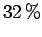

A continuación selecciónese desde el menú:
Debe visualizarse una matriz como la que muestra la figura  . Los diferentes colores determinan si los Valores de Entrada son Números Crisp, Intervalos, Números Difusos, Etiquetas, o si por el contrario son Valores calculados por el programa (ver secciones
. Los diferentes colores determinan si los Valores de Entrada son Números Crisp, Intervalos, Números Difusos, Etiquetas, o si por el contrario son Valores calculados por el programa (ver secciones  y
y  ).
).
Las columnas Evaluación 1 y Evaluación 2 contienen la valoración de las dos alternativas siguiendo las dos estrategias definidas en el proyecto. En ambas estrategias la valoración de la Alternativa A es mayor que la de la Alternativa B. Según esto, nuestra selección debería ser la alternativa A.
Sin embargo, si modificamos nuestro nivel de optimismo por debajo del  (Opción Opt en la Barra de Herramientas), el orden de las Alternativas se invierte en la estrategia 1. Por lo tanto, una evaluación ``pesimista'' con la estrategia 1 sugiere seleccionar la alternativa B.
Este es un ejemplo en el que la subjetividad del decisor (modelada por el nivel de optimismo) incide directamente en la selección de la mejor alternativa.